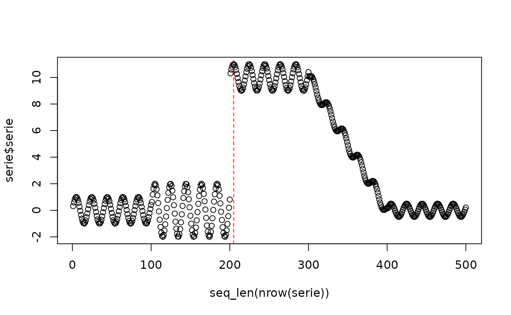

The Page-Hinkley test is a sequential change-point detector that monitors the cumulative deviation of a signal from its running mean and signals a change when that deviation departs from its running minimum by more than a threshold. In this package, the implementation is primarily used for virtual concept drift when it monitors a numeric feature stream, although the same statistic can also be applied to error streams to detect real concept drift. The method is based on Page (1954).
Usage
dfr_page_hinkley(
target_feat = NULL,
min_instances = 30,
delta = 0.005,
threshold = 50,
alpha = 1 - 1e-04,
direction = "increase"
)Arguments
- target_feat
Feature to be monitored.
- min_instances
The minimum number of instances before detecting change
- delta
The delta factor for the Page Hinkley test
- threshold
The change detection threshold (lambda)
- alpha
The forgetting factor, used to weight the observed value and the mean
- direction
Which changes of the mean are detected:
"increase"(the default, as in the reference implementation),"decrease"or"both".
References
Page, E. S. (1954). Continuous inspection schemes. Biometrika, 41(1/2), 100-115. doi:10.2307/2333009
Examples
# Load Heimdall and the synthetic stream example.
library(heimdall)
# Fix the seed for reproducibility.
seed <- 1
set.seed(seed)
# Load the univariate numeric stream monitored in this example.
data(st_drift_examples)
serie <- st_drift_examples$uv_virtual_drift
# Plot the monitored signal before detection.
plot(x=seq_len(nrow(serie)), y=serie$serie)
# Instantiate the Page-Hinkley detector.
model <- dfr_page_hinkley(target_feat='serie')
# Update the detector sequentially and record every drift alarm.
detection <- NULL
output <- list(obj=model, drift=FALSE)
for (i in seq_len(nrow(serie))){
output <- update_state(output$obj, serie$serie[i])
if (output$drift){
type <- 'drift'
output$obj <- reset_state(output$obj)
} else {
type <- ''
}
detection <- rbind(detection, data.frame(idx=i, event=output$drift, type=type))
}
# Print the detected drift points.
detection[detection$type == 'drift',]
#> idx event type
#> 205 205 TRUE drift
# Overlay those alarms on the original numeric stream.
plot(x=seq_len(nrow(serie)), y=serie$serie)
for (drift_index in detection[detection$type == 'drift', 'idx']) {
abline(v=drift_index, col='red', lty=2)
}

print(paste('Successfull run at', Sys.time()))
#> [1] "Successfull run at 2026-10-16 10:46:29.791209"